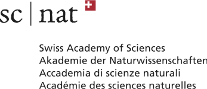
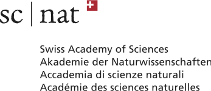
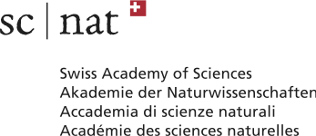

We gratefully acknowledge support from:
ANR FIBALGA
Institut de Mathématiques de Bourgogne
Swiss Academy of Sciences
Swiss mathematical society
University of Basel

 



Due to Covid restrictions, the workshop takes place 20 - 24 September 2021, in Charmey
(near Gruyères, Fribourg, Switzerland)
|
Antoine Chambert-Loir (Université Paris-Diderot) |
Tame topology in number theory and geometry |
|
Nicolas Perrin (Université de Versailles Saint Quentin En Yvelines) |
Geometry of spherical and G-varieties |
|
Amos Turchet (Università degli studi Roma Tre) |
Diophantine geometry and hyperbolicity properties of algebraic varieties |
|
Monday September 20 |
Tuesday September 21 |
Wednesday September 22 |
Thursday September 23 |
Friday September 24 |
| 12h30 welcome |
7h30-8h30 breakfast 8h45-9h45 mini-course 1 10h15-11h15 mini-course 2 11h45-12h45 mini-course 3 |
7h30-8h30 breakfast 8h45-9h45 mini-course 1 10h15-11h15 mini-course 2 11h45-12h45 mini-course 3 |
7h30-8h30 breakfast 8h45-9h45 mini-course 1 10h15-11h15 mini-course 2 11h45-12h45 mini-course 3 |
7h30-8h30 breakfast 8h45-9h45 mini-course 1 10h-11h mini-course 2 11h15-12h15 mini-course 3 |
| lunch | lunch | lunch | lunch | bus at 12h42 |
|
14h30-15h30 mini-course 1 16h00-17h00 mini-course 2 17h30-18h30 mini-course 3 19h dinner |
time for discussion / enjoying the mountain side 17h20-18h10 Schefer 18h30-19h20 Benedetti 19h30 dinner |
time for discussion / enjoying the mountain side 18h30 dinner 20-20h50 Posva 21h10-22h Schmidt |
time for discussion / enjoying the mountain side 17h20-18h10 Bot 18h30-19h20 Schneider 19h30 dinner |
VIVA GRUYERE Charmey, Rte des Arses 4, 1637 Charmey
The journey to Charmey is 2h10 from Geneva, 2h30 from Basel/Zürich, 1h30 from Lausanne.
See timetables on www.cff.ch, the bus stop is "Charmey (Gruyère), Le Chêne". The place is very close to the bus stop.
|
| |
|
Summoned by Grothendieck in his Esquisse d'un programme (1985),
tame topology is supposed to offer the flexibility of general topology without
allowing its “pathological” constructions. Inspired by mathematical logic and
real algebraic geometry, o-minimality is one solution to this program,
proposed by van den Dries. The works of Peterzil and Starchenko showed that
Serre's GAGA principle extends: if it is definable in an o-minimal structure, a complex
analytic subset of C^n is necessarily algebraic. In the last 10 years, these ideas have been made fruitful in number theory, where Zannier, Pila, then Tsimerman, Klingler, Ullmo and Yafaev proved the André-Oort conjecture concerning the geometry of subvarieties of Shimura varieties. An important tool is a counting theorem by Pila and Wilkie for points of R^n with rational coordinates with bounded numerator and denominator lying on a subset which is definable in an o-minimal structure. Recently, Klingler, Bakker, Tsimerman, Brunebarbe used these ideas in Hodge theory, reproving for example a theorem of Cattani, Deligne and Kaplan regarding the algebraicity of the Hodge loci, or by proving a conjecture of Griffiths about the quasi-projectivity of the images of period maps. The aim of the lectures is to present these notions of diverse origins and, as far as possible, to describe how they interact. | |
|
| |
|
For G a reductive group, spherical varieties are the simplest G-varieties from the G-equivariant point of view. They generalise both toric varieties (when G = T is a torus) and projective rational homogeneous spaces (eg. Grassmanians or quadrics). Spherical varieties admit a classification by colored fans extending the classification of toric varieties by fans.
In these lectures, I will present basics on the action of a linear (reductive) group G on varieties and important invariants of G-varieties. I will explain how to use these invariants for the classification of spherical embeddings via colored fans and how the geometry of the fan controls the geometry of the variety.
| |
|
| |
|
One of the fundamental problems in Diophantine Geometry is to describe the distribution of rational and integral points on varieties defined over a number field. While the situation is well understood for algebraic curves, in higher dimensions deep conjectures of Lang and Vojta predict that (in analogy with the one dimensional case) the distribution should be linked to geometric properties of the varieties. This mini-course will be a gentle introduction to this topic, with the goal of discussing modern techniques (due to Corvaja, Zannier, Levin, Autissier, Ru, Vojta…) and applications in new interesting cases. During the lectures we will also explain how these arithmetic properties are linked to various notions of hyperbolicity both in algebraic geometry and in complex-analysis.
| |
|
| |
|
Projective cubic fourfolds provide a remarkable connection
between different areas in algebraic geometry. The rationality question of
such varieties has been conjectured to be controlled by properties coming
from their Hodge structure and derived category.
Debarre-Voisin (DV) hypersurfaces share some fundamental properties with
cubic fourfolds, among which the fact that one can naturally associate to
these Fano varieties some hyper-Kahler fourfolds. As in the case of
cubics, the hyper-Kahler fourfold turns out to encode the rational Hodge
structure of DV hypersurfaces. In this talk I will focus the attention on
some divisors of the moduli space of DV varieties. By studying the
geometry of such divisors and the associated hyper-Kahler, I will show how
to deduce the integral Hodge conjecture for DV hypersurfaces.
This is a joint work with Jieao Song.
| |
|
| |
|
A real form of a complex algebraic variety X is a real algebraic variety whose complexification is isomorphic to X. Up until recently, it was known that many families of complex varieties have a finite number of nonisomorphic real forms. In 2019, Lesieutre constructed an example of a projective variety of dimension six with infinitely many, and now, Dinh, Oguiso and Yu found a projective rational surface with infinitely many as well. In this talk, I’ll present the first example of a rational affine surface having uncountably many nonisomorphic real forms. The first example with infinitely countably many real forms on an affine rational variety is due to Dubouloz, Freudenberg and Moser-Jauslin.
| |
|
| |
|
Stable varieties appear as degenerations of canonically polarized smooth varieties, and in characteristic zero they form a compact moduli space. I will report on the study of stable varieties in positive characteristic, in particular on the gluing techniques which allow to navigate between stable varieties, which might be non-normal and not suited for MMP techniques, and their normalizations.
| |
|
| |
|
We will discuss some equidistribution theorems concerning the average value of a function on the Galois orbit of a root of unity. They are related to results of Baker, Ih and Rumely, and Chambert-Loir. Classically the test functions have to be continous, but we allow logarithmic singularities. To get an impression how the p-adic absolute value behaves, we will look at differences of roots of unity and compare it with the archimedian setting.
| |
|
| |
|
I will report on joint work with Myrto Mavraki on rational dynamical systems on the projective line. The focus will be particularly on polynomial dynamics.
| |
|
| |
|
Let k be a perfect field, and consider the birational transformations of the projective plane that are defined over k. I will discuss how to decompose such maps into involutions. In other words, I will show that the plane Cremona group over these fields is generated by involutions. This is joint work with Stéphane Lamy.
| |
(the registration deadline is closed)
Ahmed Hashem Abdelhameed Abouelsaad (Basel)
Jefferson Baudin (EPFL)
Vladimiro Benedetti (Dijon)
Jérémy Blanc (Basel)
Anna Bot (Basel)
Jung Kyu Canci (Lucerne)
Antoine Chambert-Loir (Paris)
Gabriel Dill (Oxford)
Adrien Dubouloz (Dijon)
Marta Dujella (Basel)
Mani Esna Ashari (Basel)
Andrea Fanelli (Bordeaux)
Pascal Fong (Basel)
Pierre-Alexandre Gillard (Dijon)
Philipp Habegger (Basel)
Liana Heuberger (Angers)
Clémentine Lemarié-Rieusset (Dijon)
Irène Meunier (Toulouse)
Lucy Moser-Jauslin (Dijon)
Stéphane Lamy (Toulouse)
Frédéric Mangolte (Angers)
Erik Paemurru (Basel)
Nicolas Perrin (Versailles)
Quentin Posva (EPFL)
Javier Alonso Carvajal-Rojas (EPFL)
Linus Rösler (EPFL)
Gerold Schefer (Basel)
Harry Schmidt (Basel)
Julia Schneider (Toulouse)
Roberto Svaldi (EPFL)
Ronan Terpereau (Dijon)
Amos Turchet (Rome)
Christian Urech (EPFL)
Immanuel van Santen (Basel)
Francesco Veneziano (Genova)
Robert Wilms (Basel)
Egor Yasinsky (Basel)
Sokratis Zikas (Basel)
Susanna Zimmermann (Angers)
Philipp Habegger (University of Basel)
Ronan Terpereau (University of Burgundy)
Susanna Zimmermann (University of Angers)
Logistic support: Adrien Dubouloz (University of Burgundy)
Here are the previous ones:
1st, 2nd , 3rd, 4th, 5th, 6th, 7th, 8th 9th swiss-french workshop in Algebraic Geometry
We gratefully acknowledge support from:
ANR FIBALGA
Institut de Mathématiques de Bourgogne
Swiss Academy of Sciences
Swiss mathematical society
University of Basel
